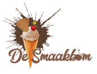
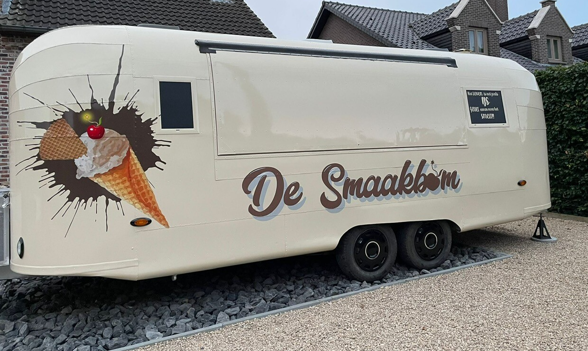
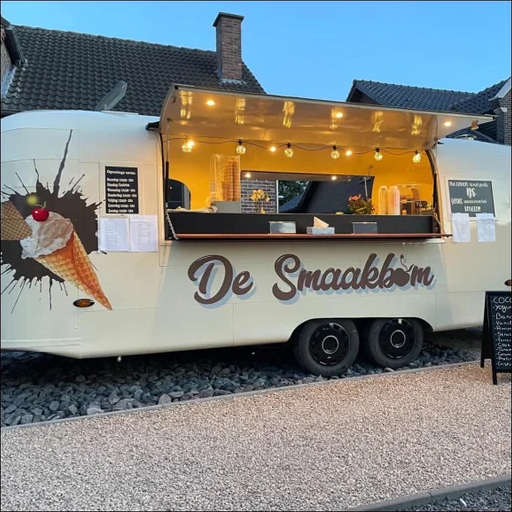

Feesten
Verjaardagen, communies, jubilea en familiefeesten.

Ijs op locatie
De Smaakbom komt met ambachtelijk ijs naar feesten, opendeurdagen, schoolmomenten en evenementen in de buurt.
Vraag info

Gezellig en herkenbaar
Met de warme verlichting, herkenbare branding en een toonbank vol lekkers brengt de foodtruck meteen sfeer. Ideaal wanneer je jouw gasten op een eenvoudige manier wil verrassen.
Verjaardagen, communies, jubilea en familiefeesten.
Traktaties, klasbezoeken en vrolijke afsluitmomenten.
Opendeurdagen, lokale activiteiten en zomerse weekends.